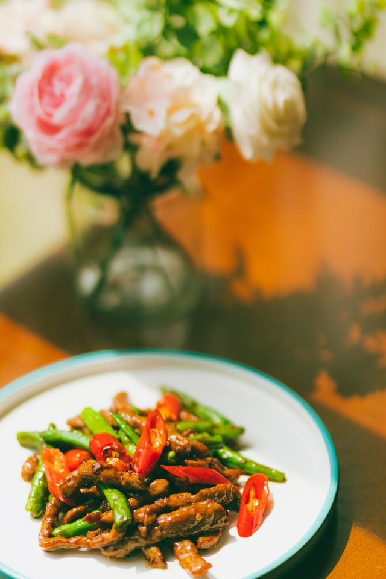

Szechuan Beef

Description
It is spicy! Serve with rice.
Ingredients
- 1 pound sirloin steak, cut into bite size strips
- 1 tablespoon soy sauce
- 2 teaspoons cornstarch
- 1/4 teaspoon crushed red pepper
- 1 clove garlic, minced
- 2 tablespoons vegetable oil
- 3 cups fresh broccoli florets
- 2 small onions, cut into wedges
- 1 (8 ounce) can water chestnuts, drained
- 1/4 chicken broth
- 1/2 cup peanuts
Steps
-
Toss beef with soy sauce, cornstarch, crushed red pepper and garlic in
non-metal bowl. Cover and refrigerate 20 minutes.
-
Heat oil in wok or large skillet over high heat. Stir fry beef until no
longer pink, 5 minutes. Stir in broccoli, onions and water chestnuts;
cook 2 minutes. Pour in broth, and bring to a boil. Stir in peanuts,
cook one minute more, and serve.